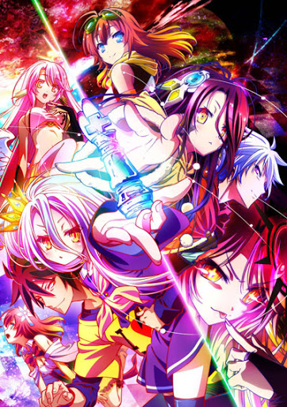

Сериал Нет игры, нет жизни/No game no life
Брат и сестра, Сора и Широ, неразлучны, как в реальном, так в игровом мире. Их индивидуальные навыки в совокупности делают их идеальной командой: Сора, с его хорошо развитой интуицией, и Широ, с её замечательным интеллектом, уровень которого выходит за рамки возможного. В реальном мире они NEET, но в игровом мире они известны как 「 」, непобедимая группа онлайн-игроков. Их называют «Пустые», поскольку имена учётных записей игроков всегда остаются незаполненными. Однажды, после победы над таинственным противником в онлайн-шахматах, брат и сестра получают предложение возродиться в другом мире под названием Disboard, где все решается с помощью игр. Согласившись, они попадают в другой мир, где встречают бога этого мира — Тета, который и оказывается тем таинственным соперником. Вместе Сора и Широ начинают своё путешествие, помогая слабой человеческой расе Иманити завоевать этот мир, чтобы бросить вызов самому Тету и получить звание Бога.
Главные Герои:
Сора — сводный 18-ти летний брат Широ. Играя в игры, Сора хорошо просчитывает мысли соперников и прогнозирует их следующие шаги. Он хорош в читерстве, а также замечает читерство со стороны соперников и прекрасен в стратегиях. После победы в состязаниях между жителями Дисборда он становится королём. После коронации изъявляет желание завоевать весь мир, чтобы стать богом. Когда Сора не находится рядом с сестрой, он становится замкнутым.
Широ — сводная 11-ти летняя сестра Соры. Родилась гением. Широ хорошо разбирается с делами, в которых необходим расчёт. Она также хорошо играет в шахматы и FPS-игры, но имеет проблемы, когда противник читерит или происходит что-то непредсказуемое. Когда она объединяется с Сорой, они становятся непобедимы в играх. Она становится царствующей королевой Дисборда после того, как вместе с Сорой побеждает в состязаниях между жителями Элькии. Широ остается на стороне Соры и, несмотря ни на что, хочет вместе с ним покорить мир. Когда она не с братом, становится подавленной из-за антропофобии.
Джибрил — самая молодая и сильная из флюгелей, известна своей безжалостностью. Она выиграла библиотеку Элькии у дедушки Стефани, чтобы использовать её как дом и хранить в ней свои книги. После поражения Соре и Широ в Сиритори она становится их рабыней, но с ней обращаются как с равной. Она часто снабжает их нужными для них магическими и транспортными средствами. Позже она начинает публиковать романы, основанные на Соре и Широ, которые делают их известными среди флюгелей.
Фил Нилвален — эльф, считающаяся неудачным магом из-за того, что она вынуждена скрывать свой талант от остальных эльфов, чтобы помочь Курами. Она готова предать Эльвен Гард, страну, населённую эльфами, чтобы защитить подопечную. В итоге вместе с Курами устраивает заговор с целью получения политической власти достаточной силы для освобождения Курами из рабства.
Курами Зелл — 18-летняя девушка, находящаяся в рабстве у семьи Нилвален. Несмотря на это, поддерживает очень тесную, почти родственную связь с Фил Нилвален. Вместе с последней устраивает заговор, чтобы помочь Фил обрести политическую власть достаточной силы для отмены рабства. Соре удаётся убедить Курами стать её союзником, поделившись с ней своими воспоминаниями.
Стефани Дола — внучка бывшего короля Элькии. Она довольно умна, но у неё недостаточно интуиции, чтобы выигрывать в игры. Её дедушка печально известен за проигрыш земель Элькии в играх. В результате Стефани старается восстановить честь своего дедушки и человечества. Когда Сору и Широ коронуют, она становится их помощником и занимается экономикой и политикой Элькии. Они обнаруживают, что её дедушка хранил секретную информацию о других расах, которая становится их ключом к победе; её опыт с Сорой и Широ улучшает её навыки до такого уровня, что она может победить обычных людей.
|
 |